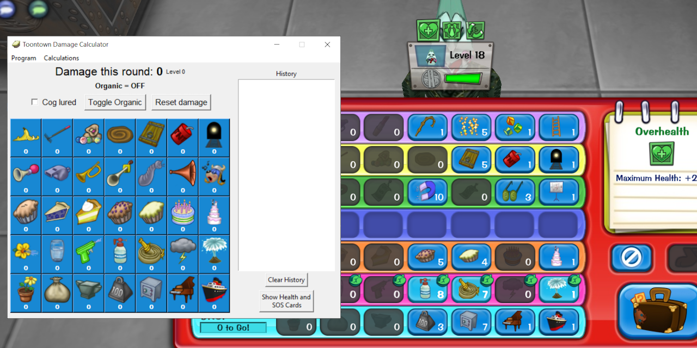

The Toontown Rewritten Gag Damage Calculator is a downloadable program made by Vhou. The program allows users to calculate damage dealt by a particular gag selection, and includes functionality to calculate how status effects affect various parts of battle.
It is written in the Rust and Python programming languages, and the source code can be found in this GitHub repository. You can find the latest release of the program at https://github.com/Vhou-Atroph/TT-Damage-Calculator/releases/latest.
This calculator allows for the calculation of damage dealt during a single round of battle using all damaging gag tracks and common SOS cards. On the main interface, the user is also able to toggle whether a cog is lured or not, and whether gags to add to a calculation are organic or not. To completely reset a calculation, users can simply press the "Reset damage" button. In addition to what is present on the main interface, the "Calculations" menu at the top of the program also features the following calculation modifiers:
Under the "Program" menu, users can also find the following:
To help expedite certain functions, there are also several keybinds to use:
| Key | Function |
|---|---|
| Shift | Toggle Organic |
| Ctrl+L | Toggle Lured |
| Ctrl+R | Reset Calculation |
| Ctrl+D | Cycle through defense values |
| Ctrl+V | Cycle through reinforced plating values |
| Ctrl+X | Lock/Unlock modifiers |
| Alt+Up | Pin/Unpin window |
As new features continue to get added to Toontown Rewritten, I will continue to try to add on to and improve this gag calculator!
Something not working the way it should? Send a bug report to the issue tracker!
The latest releae of the Toontown Rewritten Gag Damage Calculator is V4.2.1, and has the following changes:
The code for the Toontown Rewritten Gag Damage Calculator is licensed under the GNU General Public License v3.0. You should receive a copy of this license when you download the program. Image assets such as those originally present in Disney's Toontown Online are the property of Disney.